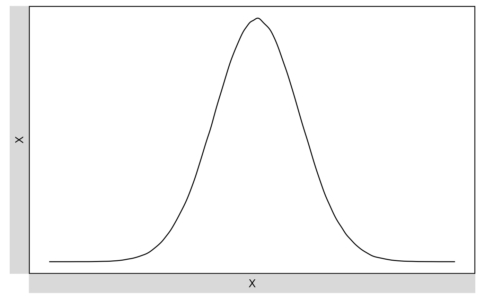

Descriptive statistics.
Usage
Describe(
data,
all.as.numeric = TRUE,
digits = 2,
file = NULL,
plot = FALSE,
upper.triangle = FALSE,
upper.smooth = "none",
plot.file = NULL,
plot.width = 8,
plot.height = 6,
plot.dpi = 500
)Arguments
- data
Data frame or numeric vector.
- all.as.numeric
TRUE(default) orFALSE. Transform all variables into numeric (continuous).- digits
Number of decimal places of output. Defaults to
2.- file
File name of MS Word (
.doc).- plot
TRUEorFALSE(default). Visualize the descriptive statistics usingGGally::ggpairs().- upper.triangle
TRUEorFALSE(default). Add (scatter) plots to upper triangle (time consuming when sample size is large).- upper.smooth
"none"(default),"lm", or"loess". Add fitting lines to scatter plots (if any).- plot.file
NULL(default, plot in RStudio) or a file name ("xxx.png").- plot.width
Width (in "inch") of the saved plot. Defaults to
8.- plot.height
Height (in "inch") of the saved plot. Defaults to
6.- plot.dpi
DPI (dots per inch) of the saved plot. Defaults to
500.
Value
Invisibly return a list with
(1) a data frame of descriptive statistics and
(2) a ggplot2 object if plot=TRUE.
Examples
set.seed(1)
Describe(rnorm(1000000), plot=TRUE)
#> Descriptive Statistics:
#> ──────────────────────────────────────────────────────────
#> N Mean SD | Median Min Max Skewness Kurtosis
#> ──────────────────────────────────────────────────────────
#> 1000000 0.00 1.00 | 0.00 -4.88 4.65 -0.00 -0.01
#> ──────────────────────────────────────────────────────────
#> Registered S3 method overwritten by 'GGally':
#> method from
#> +.gg ggplot2

Describe(airquality)
#> Descriptive Statistics:
#> ──────────────────────────────────────────────────────────────────────
#> N (NA) Mean SD | Median Min Max Skewness Kurtosis
#> ──────────────────────────────────────────────────────────────────────
#> Ozone 116 37 42.13 32.99 | 31.50 1.00 168.00 1.21 1.11
#> Solar.R 146 7 185.93 90.06 | 205.00 7.00 334.00 -0.42 -1.00
#> Wind 153 9.96 3.52 | 9.70 1.70 20.70 0.34 0.03
#> Temp 153 77.88 9.47 | 79.00 56.00 97.00 -0.37 -0.46
#> Month 153 6.99 1.42 | 7.00 5.00 9.00 -0.00 -1.32
#> Day 153 15.80 8.86 | 16.00 1.00 31.00 0.00 -1.22
#> ──────────────────────────────────────────────────────────────────────
Describe(airquality, plot=TRUE, upper.triangle=TRUE, upper.smooth="lm")
#> Descriptive Statistics:
#> ──────────────────────────────────────────────────────────────────────
#> N (NA) Mean SD | Median Min Max Skewness Kurtosis
#> ──────────────────────────────────────────────────────────────────────
#> Ozone 116 37 42.13 32.99 | 31.50 1.00 168.00 1.21 1.11
#> Solar.R 146 7 185.93 90.06 | 205.00 7.00 334.00 -0.42 -1.00
#> Wind 153 9.96 3.52 | 9.70 1.70 20.70 0.34 0.03
#> Temp 153 77.88 9.47 | 79.00 56.00 97.00 -0.37 -0.46
#> Month 153 6.99 1.42 | 7.00 5.00 9.00 -0.00 -1.32
#> Day 153 15.80 8.86 | 16.00 1.00 31.00 0.00 -1.22
#> ──────────────────────────────────────────────────────────────────────
# ?psych::bfi
Describe(psych::bfi[c("age", "gender", "education")])
#> Descriptive Statistics:
#> ──────────────────────────────────────────────────────────────────────
#> N (NA) Mean SD | Median Min Max Skewness Kurtosis
#> ──────────────────────────────────────────────────────────────────────
#> age 2800 28.78 11.13 | 26.00 3.00 86.00 1.02 0.56
#> gender 2800 1.67 0.47 | 2.00 1.00 2.00 -0.73 -1.47
#> education 2577 223 3.19 1.11 | 3.00 1.00 5.00 -0.05 -0.32
#> ──────────────────────────────────────────────────────────────────────
d = as.data.table(psych::bfi)
added(d, {
gender = as.factor(gender)
education = as.factor(education)
E = .mean("E", 1:5, rev=c(1,2), range=1:6)
A = .mean("A", 1:5, rev=1, range=1:6)
C = .mean("C", 1:5, rev=c(4,5), range=1:6)
N = .mean("N", 1:5, range=1:6)
O = .mean("O", 1:5, rev=c(2,5), range=1:6)
})
Describe(d[, .(age, gender, education)], plot=TRUE, all.as.numeric=FALSE)
#> Descriptive Statistics:
#> ───────────────────────────────────────────────────────────────────────
#> N (NA) Mean SD | Median Min Max Skewness Kurtosis
#> ───────────────────────────────────────────────────────────────────────
#> age 2800 28.78 11.13 | 26.00 3.00 86.00 1.02 0.56
#> gender* 2800 1.67 0.47 | 2.00 1.00 2.00 -0.73 -1.47
#> education* 2577 223 3.19 1.11 | 3.00 1.00 5.00 -0.05 -0.32
#> ───────────────────────────────────────────────────────────────────────
#> `stat_bin()` using `bins = 30`. Pick better value with `binwidth`.
#> `stat_bin()` using `bins = 30`. Pick better value with `binwidth`.
Describe(d[, .(age, gender, education, E, A, C, N, O)], plot=TRUE)
#> Descriptive Statistics:
#> ───────────────────────────────────────────────────────────────────────
#> N (NA) Mean SD | Median Min Max Skewness Kurtosis
#> ───────────────────────────────────────────────────────────────────────
#> age 2800 28.78 11.13 | 26.00 3.00 86.00 1.02 0.56
#> gender* 2800 1.67 0.47 | 2.00 1.00 2.00 -0.73 -1.47
#> education* 2577 223 3.19 1.11 | 3.00 1.00 5.00 -0.05 -0.32
#> E 2800 4.15 1.06 | 4.20 1.00 6.00 -0.48 -0.21
#> A 2800 4.65 0.90 | 4.80 1.00 6.00 -0.76 0.40
#> C 2800 4.27 0.95 | 4.40 1.00 6.00 -0.40 -0.19
#> N 2800 3.16 1.20 | 3.00 1.00 6.00 0.21 -0.67
#> O 2800 4.59 0.81 | 4.60 1.20 6.00 -0.34 -0.29
#> ───────────────────────────────────────────────────────────────────────
#>
#> NOTE: `gender`, `education` transformed to numeric.